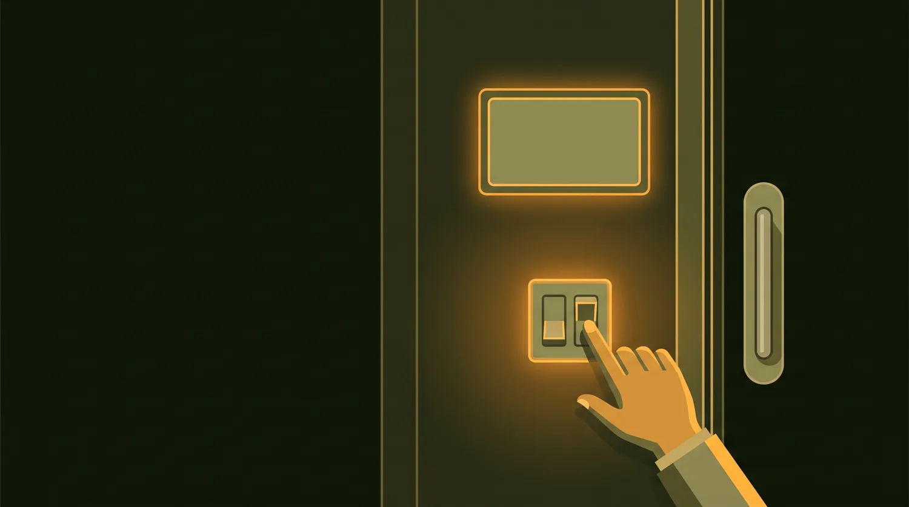
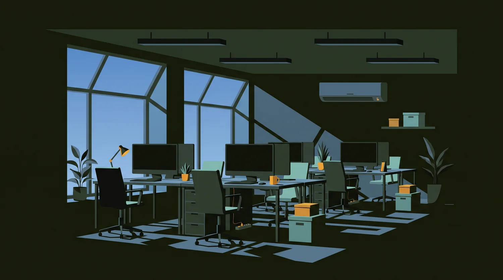

PBL · Digital Transformation Management
ตรวจก่อนออก.
เปลี่ยนการปิดไฟในสำนักงานจาก "ความจำ" → เป็น "มาตรฐานการทำงาน"
Office Energy Saving — from Memory to Standard Procedure
1 · Problem
พนักงาน 75% เคยลืมปิดไฟ
- เกิดซ้ำในช่วง เปลี่ยนกิจกรรม — พักเที่ยง · เข้าประชุม · ออกจากพื้นที่ชั่วคราว
- พบไฟเปิดทิ้งไว้ ทั้งที่ไม่มีผู้ใช้งาน ในห้องทำงานและห้องประชุม
- เป็นการใช้พลังงานที่ ไม่เกิดประโยชน์ใด ๆ ต่อองค์กร
- ที่มาข้อมูล: สัมภาษณ์ + แบบสอบถามพนักงานจริงใน Innovative Village
พนักงาน ไม่ได้ขาดความรู้ — ทุกคนรู้ว่าควรปิด แต่ยังลืมอยู่ดี
 📷 ถ่ายจริงจากสำนักงานใน Innovative Village — ไฟเพดาน แอร์ และพัดลม ทำงานพร้อมกันขณะไม่มีคนอยู่
📷 ถ่ายจริงจากสำนักงานใน Innovative Village — ไฟเพดาน แอร์ และพัดลม ทำงานพร้อมกันขณะไม่มีคนอยู่
2 · Root Cause
ทำไมถึงลืม — 3 สาเหตุจากปากพนักงาน
🏃
รีบไปทำกิจกรรมถัดไป
ความสนใจย้ายไปงานถัดไปก่อนที่จะได้ตรวจสอบห้อง
→ ข้อจำกัดด้านความจำและความสนใจ
👥
คิดว่าจะมีคนมาใช้ต่อ
ไม่แน่ใจว่าตนเองเป็นคนสุดท้ายหรือไม่ จึงไม่ได้ปิด
→ ความคาดหวังร่วมในพื้นที่ส่วนกลาง
🚪
ออกจากห้องโดยไม่ตรวจสอบ
ไม่มีจังหวะหรือสิ่งกระตุ้นให้หันกลับไปดูสถานะไฟ
→ จุดที่องค์กรเข้าไปออกแบบได้
การลืมเกิดจาก สถานการณ์ระหว่างเปลี่ยนกิจกรรม มากกว่าการขาดความรู้
3 · Gap Analysis
ช่องว่างระหว่าง สิ่งที่รู้ กับ สิ่งที่มี
พนักงานรู้อยู่แล้ว
- คนสุดท้ายควรเป็นคนปิดไฟ
- การประหยัดพลังงานเป็นเรื่องสำคัญ
- เปิดทิ้งไว้ทำให้ค่าไฟองค์กรสูงขึ้น
➜
แต่องค์กรยังไม่มี
- มาตรฐานการตรวจสอบก่อนออกจากพื้นที่
- Checklist หรือขั้นตอนที่เป็นรูปธรรม
- Prompt / สิ่งเตือนในจังหวะที่ตัดสินใจ
- การติดตามผลว่าทำจริงหรือไม่
ปัจจุบันการปิดไฟยังอาศัย ความจำของแต่ละบุคคล เพียงอย่างเดียว — ซึ่งคือสาเหตุของปัญหาอยู่แล้ว
4 · Literature Review
งานวิจัยที่รองรับ แนวทางที่เราเลือก
Prospective Memory
คนมักลืมสิ่งที่ตั้งใจจะทำ เมื่อมีการเปลี่ยนกิจกรรมหรือถูกขัดจังหวะ — ตรงกับสาเหตุที่ 1 ของเรา
Finstad et al. (2006), Applied Cognitive Psychology
Social Norms & Mutual Expectations
คนตัดสินใจจากความเชื่อว่าผู้อื่นจะทำอะไร จึงเกิดการคิดว่า "เดี๋ยวก็มีคนมาใช้ต่อ" — ตรงกับสาเหตุที่ 2
Bicchieri (2005), The Grammar of Society
Prompts ลดการใช้พลังงานได้จริง
การติดข้อความเตือนตรงจุดใช้งานในสำนักงาน ช่วยให้คนปิดไฟตอนออกจากห้องมากขึ้น และข้อความเชิงความรับผิดชอบร่วมได้ผลดีกว่าคำสั่ง
Simple prompts reduce inadvertent energy consumption (2014)
Responsibility & Perceived Control
พฤติกรรมประหยัดพลังงานในพื้นที่ส่วนรวมสัมพันธ์กับความชัดเจนของความรับผิดชอบและความสะดวกในการควบคุมอุปกรณ์
Frontiers in Built Environment (2020) · Frontiers in Psychology (2025, บริบทไทย)
การบอกให้ประหยัดไฟอย่างเดียว ไม่เพียงพอ — ต้องมี Trigger (สิ่งกระตุ้นถูกที่ถูกเวลา) และ Feedback
5 · Proposed Solution
เลือกแก้ที่ "ไม่ได้ตรวจสอบก่อนออก"
| สาเหตุ | ประเมิน |
|---|
| รีบไปทำกิจกรรมอื่น | พฤติกรรมส่วนบุคคล — ควบคุมได้ยาก |
| คิดว่าจะมีคนมาใช้ต่อ | ความเชื่อส่วนบุคคล — เปลี่ยนได้ช้า |
| ไม่ได้ตรวจสอบก่อนออก | องค์กรสร้างมาตรฐานร่วมกันได้ทันที |
เปลี่ยนการปิดไฟจาก "ความจำ" → เป็น "มาตรฐานการทำงาน"
หมายเหตุ: เซนเซอร์/ระบบปิดอัตโนมัติยังไม่ตัดทิ้ง แต่จัดเป็นระยะถัดไป เนื่องจากมีต้นทุนและต้องพิสูจน์ความคุ้มค่าก่อน (ดูสไลด์ 8)

Trigger วางไว้ ณ จุดตัดสินใจ — ข้างมือจับประตูและสวิตช์ไฟ ก่อนก้าวออกจากห้อง
6 · Solution Design
องค์ประกอบ + ขั้นตอนการทำงาน
📋
Standardกำหนดชัดว่าใครตรวจ ตรวจอะไร ตรวจเมื่อไร
🔔
Promptป้ายเตือนที่ประตู/สวิตช์ — ถ้อยคำกระตุ้น ไม่ตำหนิ
✅
Checklist / QRสแกนยืนยันการตรวจ ใช้เวลา 5 วินาที
📊
Feedbackสรุปผลรายสัปดาห์ให้ทีมเห็นร่วมกัน
1 · ก่อนออกป้ายเตือนสะดุดตาที่จุดตัดสินใจ
2 · ตรวจมีคนอยู่ในห้องหรือไม่
3 · ปิดไฟ · แอร์ · อุปกรณ์ที่ไม่ใช้
4 · ยืนยันสแกน QR / ติ๊ก checklist
5 · สรุปผลFeedback กลับไปที่ทีม
ข้อความบนป้ายเป็นการ กระตุ้นให้ตรวจสอบ เช่น "เป็นคนสุดท้ายหรือไม่ ตรวจไฟก่อนออก" — ไม่ใช้ถ้อยคำตำหนิ เพราะไม่ได้แก้สาเหตุด้านความจำ
7 · Evaluation
วัดผลอย่างไร — 3 ด้าน
① ด้านพฤติกรรม (ตัวชี้ขาด)
อัตราการตรวจสอบก่อนออก (%)
จำนวนครั้งที่พบไฟเปิดทิ้ง/สัปดาห์
อัตราการทำ Checklist ครบ
② ด้านพลังงาน
ชั่วโมงที่ไฟเปิดโดยไม่มีคนอยู่
หน่วยไฟฟ้า (kWh) ที่ลดลง
ค่าไฟที่ประหยัดได้ (บาท)
③ ด้านเศรษฐศาสตร์
ต้นทุนรวมของมาตรการ
ROI
ระยะเวลาคืนทุน
ให้ ตัวชี้วัดด้านพฤติกรรม เป็นตัวชี้ขาด เพราะหน่วยไฟรวมถูกรบกวนด้วยสภาพอากาศและจำนวนคนเข้าออฟฟิศ — ต้องเก็บ Baseline 2–4 สัปดาห์ ก่อนเริ่มมาตรการ
8 · Cost-effectiveness
คุ้มไหม — คำนวณแล้วจึงเลือก
| แนวทาง | ต้นทุน/ห้อง | ประหยัด/เดือน/ห้อง | ระยะคืนทุน |
|---|
| ป้ายเตือน + Checklist | ~50–200 ฿ | ~19–225 ฿ | < 1 เดือน ✓ |
| เซนเซอร์ (คิดเฉพาะไฟ) | ~1,500 ฿ | ~19 ฿ | ~5–6 ปี ✕ |
| เซนเซอร์ (ไฟ + แอร์) | ~1,500 ฿ | ~225 ฿ | ~7 เดือน |
ระยะเวลาคืนทุน = ต้นทุนของ Solution ÷ เงินที่ประหยัดได้ต่อเดือน | ค่าไฟ 3.95 ฿/หน่วย (กกพ. งวด พ.ค.–ส.ค. 69)
ตัวเลขยืนยันว่ามาตรการ ต้นทุนต่ำควรมาก่อน — ไม่ได้เลือกเพราะทำง่าย แต่เลือกเพราะคำนวณแล้วคุ้มกว่าในระยะแรก
⚠️ ตัวเลขข้างต้นเป็นการประมาณการเบื้องต้น (สมมติ LED 6 หลอด/ห้อง เปิดทิ้ง 2 ชม./วัน × 22 วัน) — อยู่ระหว่างแทนค่าด้วยบิลค่าไฟจริงของทั้ง 5 บริษัทที่เก็บมาแล้ว
9 · Energy Data Collection
ข้อมูลพื้นฐานที่ต้องเก็บ ก่อนวัดผล
- ค่าไฟย้อนหลัง ของแต่ละบริษัท (เก็บแล้ว)
- จำนวนหลอดไฟ และกำลังไฟแต่ละพื้นที่
- จำนวนเครื่องปรับอากาศ และชั่วโมงใช้งาน
- จำนวนพนักงาน และพื้นที่สำนักงาน
| บริษัท | อาคาร | พนักงาน |
|---|
| CAS Cogniser | B3, B4 | 4 |
| Innergylab | B6 | 4 |
| Innovative Village | A1 | 4 |
| IAgency | C10 | 3 |
| Kiry | B5 | 6 |
 พื้นที่ศึกษา: Innovative Village — 5 บริษัท 21 คน กระจายตามอาคาร A1 / B3–B6 / C10
พื้นที่ศึกษา: Innovative Village — 5 บริษัท 21 คน กระจายตามอาคาร A1 / B3–B6 / C10
10 · Expected Outcome
ผลลัพธ์ที่คาดหวัง
- สำนักงานมี มาตรฐานการตรวจสอบก่อนออก ที่ทำซ้ำได้และวัดผลได้
- จำนวนครั้งที่พบไฟเปิดทิ้งลดลง เทียบกับช่วง Baseline
- ได้ ข้อมูลการใช้พลังงานจริง ที่องค์กรไม่เคยมีมาก่อน
- มีฐานตัวเลขพอสำหรับตัดสินใจว่า ควรลงทุนเซนเซอร์ในระยะถัดไปหรือไม่
ต่อให้ผลออกมาว่ามาตรการยังไม่พอ งานนี้ก็สำเร็จเชิงระเบียบวิธี — เพราะจะรู้ด้วย ข้อมูลจริง ไม่ใช่การเดา

ภาพเป้าหมาย: ห้องว่าง = ไฟดับ โดยไม่ต้องพึ่งความจำของใครคนใดคนหนึ่ง
Appendix · เตรียมตอบคำถาม
Q&A
- ทำไมไม่ติดเซนเซอร์เลย? — คำนวณแล้ว: ถ้าคิดเฉพาะไฟส่องสว่าง คืนทุน ~5 ปี · และมีความเสี่ยงตัดไฟขณะพนักงานนั่งนิ่ง ๆ · จัดเป็นระยะถัดไปหลังมีข้อมูล baseline
- ทำไมไม่ทำ Gamification? — Root cause คือการลืมตรวจสอบ ไม่ใช่การขาดแรงจูงใจ · แรงจูงใจแก้ปัญหาความจำไม่ได้โดยตรง
- ป้ายเตือนอย่างเดียวจะพอเหรอ? — ไม่ได้มีแค่ป้าย มี Standard + Checklist ยืนยัน + Feedback · และมีงานวิจัยรองรับว่า prompt ตรงจุดใช้งานลดการเปิดไฟทิ้งได้จริง
- วัดผลยังไงให้เชื่อถือได้? — Baseline 2–4 สัปดาห์ก่อนเริ่ม แล้วเทียบก่อน–หลังด้วยวิธีเก็บเดิมเป๊ะ · ใช้ตัวชี้วัดพฤติกรรมเป็นหลักเพราะ kWh ถูกอากาศรบกวน
- ข้อมูลสัมภาษณ์น้อยไปไหม? — ยอมรับเป็นข้อจำกัด (ผู้ให้ข้อมูล 3 คน + แบบสอบถาม) จึงต้องใช้ร่วมกับการสังเกตและการตรวจวัดจริง